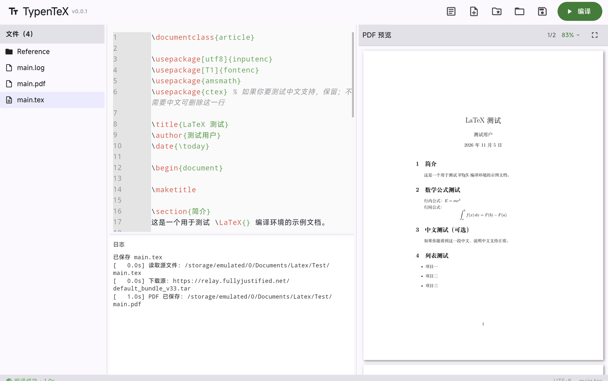

TypenTeX 是一款 Android 原生 LaTeX 编辑器：Tectonic 引擎完全离线编译，写完即编译，分屏实时预览 PDF。

不需要服务器、不需要网络、不需要折腾环境——装上就能写。
内置 Tectonic 引擎，编译全程在本地完成。飞机上、地铁里，没有网络也能出 PDF。
编辑器与 PDF 预览左右分屏，编译完成自动刷新；支持页码显示与 25%~200% 缩放。
文件树、编辑器、日志、PDF 四个区域的比例随手拖动调整，横屏平板上空间利用拉满。
LaTeX 命令、数学环境、注释分色渲染，长文写作时结构一目了然。
超宽内容自动折行、行号精确对齐，配合纵向滚动条定位，读长段落不迷路。
UTF-8 原生支持，配合 ctex 宏包直接写中文文档，无需额外配置。
菜单里一键检查 GitHub 发布页的新版本，无需自己比对版本号。
所有文档与编译产物只保存在你的设备上，不采集、不上传任何数据。
首次编译会自动下载 Tectonic 默认宏包集，之后便是纯离线编译。
从 GitHub Releases 下载最新 APK，安装时允许「安装未知应用」即可。
内置示例文档，也可打开设备上任意 LaTeX 工程；左侧文件树自由切换。
右侧即刻呈现 PDF 预览；编译日志实时显示在编辑器下方，出错一眼定位。
免费下载、无广告，文档只留在本机。发布页提供所有历史版本。
当前版本 v0.0.1 · 建议 Android 10 及以上 · 推荐平板横屏使用
一名喜欢折腾的个人开发者。
白天与数据和代码打交道，晚上被 LaTeX 折磨，于是干脆自己写了一个顺手的 LaTeX 编辑器。坚信好的工具应该把时间留给内容本身，而不是留给配置环境。平时活跃于技术社区，欢迎来 GitHub 找我。
TypenTeX 为专有软件，版权所有，保留一切权利；随包分发的第三方组件仍适用其各自的原始许可。
TypenTeX 的安装包、界面设计、图标与文档均为专有软件，Copyright © 2026 TypenTeX. All rights reserved.
除法律强制允许的情形外，未经著作权人事先书面许可，不得复制、分发、修改、反向工程或以其他方式利用本软件。从本页或发布页下载的原始安装包可直接安装使用。
本软件内含 Tectonic（XeTeX 引擎）、Flutter、pdfx、flutter_code_editor 等第三方组件，均以 MIT、Apache-2.0、BSD 等许可证分发。
各组件的版权归其作者所有，其许可条款不因本软件的专有许可而改变。完整清单与许可证原文随安装包分发，也可在此查看。